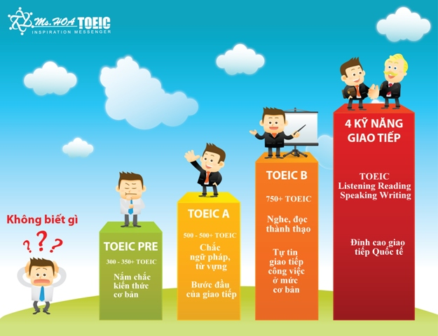

LUYỆN THI TOEIC
Luyện thi TOEIC là một quá trình mà tất cả các sinh viên đều phải trải qua, đây như là điều kiện cần thiết để sinh viên ra trường. Vậy luyện thi TOEIC như thế nào cho đạt hiệu quả cao trong thời gian ngắn? Chúng ta nên luyện thi ở nhà hay ở trung tâm? Bạn đừng quá lo lắng! Bài viết sau đây, AnhleEnglish sẽ giải quyết hết tất cả các vấn đề bạn đang gặp phải khi không biết nên luyện thi TOEIC bắt đầu từ đâu.
Tổng quan về kỳ thi TOEIC
TOEIC là bài thi đánh giá khả năng Tiếng Anh xuất phát từ Nhật Bản, cụ thể là tại cơ sở ETS vào năm 1979. Trải qua hơn 30 năm đến nay thì kỳ thi TOEIC đang dần phổ biến trên thế giới trong môi trường công sở. Theo số liệu mới nhất gần đây, tại Việt Nam có hơn 127 trường đại học, cao đẳng chọn TOEIC làm chuẩn đầu ra. Không chỉ dừng ở số liệu này mà hơn 350 doanh nghiệp tập đoàn còn dùng TOEIC làm chuẩn đánh giá tuyển dụng.
TOEIC là chứng chỉ quốc tế về trình độ Tiếng Anh và có một số giá trị nhất định như:
- Chứng chỉ giúp du học
- Mở rộng cơ hội việc làm
- Khả năng giao tiếp tiếng Anh
Ngoài ra, tiêu chuẩn đầu ra của các trường Đại học, Cao đẳng: Hiện nay, để đủ điều kiện ra trường thì chứng chỉ TOEIC là một điều kiện cần và đủ của hầu hết các bạn sinh viên. Các bạn phải đạt chứng chỉ TOEIC với số điểm từ 450 trở lên. Vì thế, có thể nói rằng chứng chỉ TOEIC có vai trò vô cùng quan trọng.
Xác định trình độ tiếng Anh trước khi luyện thi TOEIC
Để quá trình luyện thi TOEIC đạt hiệu quả cao, bạn cần xác định được trình độ Tiếng Anh của bản thân trước khi luyện thi TOEIC. Việc xác định chính xác trình độ trước khi luyện thi TOEIC sẽ giúp cho kế hoạch được lập ra rõ ràng và không mất quá nhiều thời gian, tài liệu giáo trình cũng phù hợp với bản thân hơn. Ngoài ra, việc chúng ta xác định trình độ Tiếng Anh mình đang như thế nào ngay từ đầu còn giúp bản thân nhận ra đâu là thế mạnh, đâu là điểm yếu bản thân cần cải thiện.
TOEIC là một kỳ thi sẽ có 2 kỹ năng cần thiết Nghe và Đọc Hiểu được xem là rất quan trọng. Và để xác định chính xác trình độ về TOEIC bạn có thể luyện tập các đề thi online có trên AnhleEnglish. Trong quá trình làm đề thi thử cần tự đánh giá ở một số mục sau:
- Mức điểm TOEIC hiện tại của bạn là bao nhiêu → để biết số điểm đó cách mục tiêu của bạn là bao nhiêu
- Trong TOEIC 4 kỹ năng, bạn đang có thế mạnh về phần nào → Phần nào yếu thì dành thời gian rèn luyện nhiều hơn
- Từ vựng và ngữ pháp bạn đã nắm vững được bao nhiêu → để bổ sung những kiến thức còn thiếu
Sau khi làm đề thi thử TOEIC xong, nếu bạn cảm thấy mình đã đạt được mục tiêu thì có thể củng cố thêm kiến thức bằng các lỗi sai trong bài thi. Đề thi có xác suất câu nhất định theo trình độ từ dễ đến khó nên dù lần thi thử đạt được kết quả khả quan thì cũng chưa hẳn thi thật bạn sẽ đạt được kết quả cao như vậy.
Và nếu như trường hợp kết quả thi thử quá tệ, thì bạn cần phải xác định các vấn đề chính như sau:
- Kỹ năng nào là yếu nhất
- Kỹ năng mạnh nhất mà bạn có
- Lỗi sai hay gặp
- Đưa ra lộ trình ôn thi TOEIC hiệu quả
- Tiếp tục giải đề thi để xác định được thực lực bản thân
Luyện đề thi TOEIC
Luyện giải đề thi TOEIC là cách hiệu quả nhất để bạn có thể tiếp cận và làm quen với đề thi nhiều hơn và áp dụng được những kiến thức Tiếng Anh của mình. Để luyện giải đề thi TOEIC, bạn có thể luyện giải bằng cách online, offline có thầy cô hướng dẫn hoặc đơn giản là giải đề thông qua sách.
Hiện nay trên thị trường thì sách để giải đề thi TOEIC khá phổ biến. Nhưng có một nhược điểm khi mà bạn phải tự chấm điểm bằng tay và đôi lúc có nhiều cuốn sách chỉ đưa ra đáp án nhưng không hề giải thích tại sao lại lựa chọn đáp án đó, nên nhiều lúc mức độ cải thiện của bạn khi giải đề thi trên sách cũng hạn chế hơn rất nhiều.
Việc giải đề thi TOEIC trong quá trình luyện thi cần được dành nhiều thời gian. Qua mỗi đề thi được giải, cần tìm ra lỗ hổng kiến thức của bản thân và tích trữ kiến thức từ những lỗi sai cơ bản nhất. Việc giải đề cần được tiến hành theo qua từng giai đoạn luyện thi, giúp phù hợp hơn với lượng kiến thức và đỡ nhàm chán khi giải.
Bạn muốn củng cố vốn Tiếng Anh nhiều hơn hay muốn luyện tập thêm các kỹ năng cần thiết thì hãy đọc phần tiếp theo đây.
Lộ trình luyện thi TOEIC chi tiết
Điều mà tất cả các thí sinh TOEIC quan tâm nhất đó là “Học gì để thi TOEIC đạt kết quả cao và nên ôn gì” đúng không!
Thông qua những kinh nghiệm mà nhiều năm qua AnhleEnglish đã xây dựng lộ trình luyện thi TOEIC và chúng tôi đã đúc kết được tất cả những gì mà một thí sinh thi TOEIC cần học:
- Ngữ pháp trong TOEIC
- Từ vựng TOEIC
- Kỹ năng nghe và luyện nghe trong TOEIC
- Part 1
- Part 2
- Part 3
- Part 4
- Kỹ năng đọc trong TOEIC
- Part 5
- Part 6
- Part 7
Bạn cần học những ngữ pháp tiếng Anh nào để thi TOEIC đạt hiệu quả? Để trả lời được câu hỏi này, chúng ta xem thử bài thi TOEIC sẽ bao gồm có những nội dung gì?
Bài thi TOEIC là bài kiểm tra tiếng Anh đánh giá trình độ tiếng Anh trong các tình huống thường ngày trong môi trường làm việc quốc tế. Vì vậy, để đánh giá chính xác khả năng sử dụng tiếng Anh thuần thục và chính xác của thí sinh thì chắc chắn đề thi TOEIC sẽ bao gồm rất nhiều điểm ngữ pháp tiếng Anh đa dạng khác nhau.
Ngữ pháp TOEIC cũng chính là ngữ pháp Tiếng Anh thông thường mà chúng ta đã từng học tại trường, tuy nhiên vẫn có một vài điểm khác ở cấp độ, cấp sử dụng ngữ pháp đó. Bạn cần chuẩn bị những giáo trình ngữ pháp TOEIC bài bản, tránh học những gì không cần thiết mà nên học vào trọng tâm. Khi hiểu được ngữ pháp sẽ giúp bạn dễ dàng hiểu được ngữ pháp một cách nhanh chóng và ghi nhớ lâu hơn rất nhiều.
Từ vựng Tiếng Anh thì rất nhiều, vậy khi luyện thi TOEIC thì cần phải học những dạng từ vựng nào?
Các đề thi TOEIC đều xuất hiện các tình huống đa dạng, các trường hợp bao gồm mua sắm, ăn uống, gửi thư từ, cho đến các công việc công sở như ký hợp đồng, tuyển dụng, ra ngân hàng,… Từ vựng TOEIC cần phải được học theo những chuyên đề như vậy. Thứ nhất nó giúp bạn nhớ nghĩa nhanh chóng và các từ liên quan, thứ hai cắt giảm được thời gian học và thứ ba là giúp bạn nhớ lâu hơn.
Sau đây sẽ là 2 phương pháp để học từ vựng TOEIC mà bạn có thể tham khảo:
Cách 1: Học thông qua sách 600 Essential Words for the TOEIC
Quyển sách được rất nhiều người tin dùng bởi vì đã có nhiều kết quả thi TOEIC đạt kết quả cao từ việc ôn sách này.
Cũng như kết quả mà nó đem lại cho người học thì ý nghĩa của cuốn sách này là: 600 từ vựng thông dụng trong Tiếng Anh. Tên sách đã nói lên tất cả, cuốn sách sẽ giúp bạn nắm vững được 600 từ vựng trong đề thi TOEIC, một con số khổng lồ trong thời gian ngắn. Ngoài ra, bạn có thể tham khảo thêm các phương pháp học từ vựng nâng cao giúp chinh phục từ vựng TOEIC một cách dễ dàng.
Cách 2: Học từ vựng thông qua việc luyện đề
Cách học này khá đơn giản, bạn chỉ cần làm đi làm lại các đề thi và nếu gặp từ ngữ nào chưa rõ nghĩa thì học ngay từ đó. Việc học từ qua luyện đề có thể sẽ mất thời gian cho việc ghi chép nhưng bù lại sẽ giúp bạn nhớ khá lâu.
Ngoài ra, từ vựng của bạn sẽ bám sát vào đề thi rất nhiều, khả năng gặp lại các từ vựng trong đề thi này là khá cao. Cách học này rất phổ biến và có thể được áp dụng cho bất kỳ quá trình luyện đề tiếng Anh nào. Chớ quên các lưu ý mà AnhleEnglish đã giới thiệu đến bạn trong việc học từ vựng.
Phần nghe trong đề thi TOEIC gồm có 4 phần nhỏ:
Mỗi phần đều có những dạng câu hỏi và các cách làm bài khác nhau. Để làm tốt được phần nghe trong TOEIC, ngoài việc nắm chắc các ngữ pháp và một lượng từ vựng đủ dùng, cách phát âm chính xác thì bạn cần phải biết phương pháp làm bài trong phần nghe là yếu tố cần thiết hợp lý.
Phần đọc trong đề thi TOEIC cũng gồm 3 phần:
Cũng như phần nghe thì đối với phần đọc ngoài việc nắm vững ngữ pháp và nhiều từ vựng hơn thì bạn cần phải biết phương pháp làm phần đọc. Bởi vì phương pháp làm bài đọc TOEIC này cũng chiếm 1 phần không hề nhỏ trong điểm số của bạn. Khoảng thời gian luyện thi thì dài nhưng khi bước vào phòng thi chỉ có 2h cho một bài thi nghe, tuy nhiên bạn cần phải nắm vững các phương pháp làm bài thi để tránh lãng phí thời gian. Vì vậy, mà các bạn cũng cần biết các chiến thuật và mẹo khi thi TOEIC.
Chiến thuật và mẹo làm bài thi hiệu quả
- Chiến thuật làm bài thi TOEIC
- Cảm thấy hồi hộp và áp lực trong quá trình làm bài
- Không khí làm bài chưa được thích nghi
- Mệt mỏi khi làm bài liên tục và áp lực từng phần
- Vấn đề âm thanh của bài nghe không quen thuộc
- Mẹo làm bài thi TOEIC
Việc mà bạn đã trang bị các kiến thức ở trên thì đã giúp bạn đi được 90% tỉ lệ đạt điểm cao và 10% còn lại cũng khá là chông gai khi bạn cần phải điều tiết cảm xúc và sức khỏe trong quá trình làm bài thi.
Để giúp bạn khắc phục được tâm lý này, nắm được quá trình thi TOEIC thật sẽ ra sao cũng như lưu ý trước và sau khi làm bài thi thì hãy cùng tìm hiểu cùng AnhleEnglish.
Khi đi thi thật tâm lý của nhiều bạn hay gặp phải đó là:
Đây là những vấn đề mà bất cứ thí sinh nào cũng phải trải qua trong khi làm đề thi. Do đó, bạn cần chuẩn bị sẵn sàng tâm lý và chiến thuật từ trước để tránh các trở ngại khi thi làm ảnh hưởng đến kết quả.
Mặc dù mẹo làm bài thi không quyết định điểm số TOEIC của bạn nhưng nó là công cụ giúp bạn chọn đáp án một cách nhanh chóng nhất, tối ưu hóa thời gian và tránh gặp các trường hợp làm bài các lỗi sai đáng tiếc. Mẹo làm bài thi TOEIC đã được AnhleEnglish tổng hợp lại và được chia theo từng phần rõ ràng.
Kinh nghiệm luyện thi TOEIC tại nhà
Chứng chỉ TOEIC ngày càng quan trọng với sinh viên và người đi làm. Tuy nhiên không phải ai cũng có điều kiện để ôn thi tại trung tâm hoặc thuê gia sư. Nếu bạn chọn luyện thi TOEIC tại nhà thì bạn cần phải biết mình cần chuẩn bị gì và học như thế nào để thi hiệu quả. Sau đây sẽ là các bước tiến hành hợp lý cho việc ôn thi tại nhà:
- Chọn mục tiêu điểm số phù hợp
- Tham khảo và tìm giáo trình phù hợp với trình độ
- Chuẩn bị các công cụ và dụng cụ để luyện thi
- Học các kỹ năng cần thiết trong đề thi TOEIC
- Tiến hành giải đề thường xuyên tại nhà
Trên đây là những kỹ năng và kinh nghiệm cần thiết giúp bạn luyện thi TOEIC một cách hiệu quả, dễ dàng đạt được mục tiêu của bản thân. Mong rằng những kiến thức mà AnhleEnglish mang đến sẽ giúp cho bạn một phần nào trong quá trình chinh phục tấm bằng TOEIC trong thời gian ngắn nhất. Chúc bạn thành công.